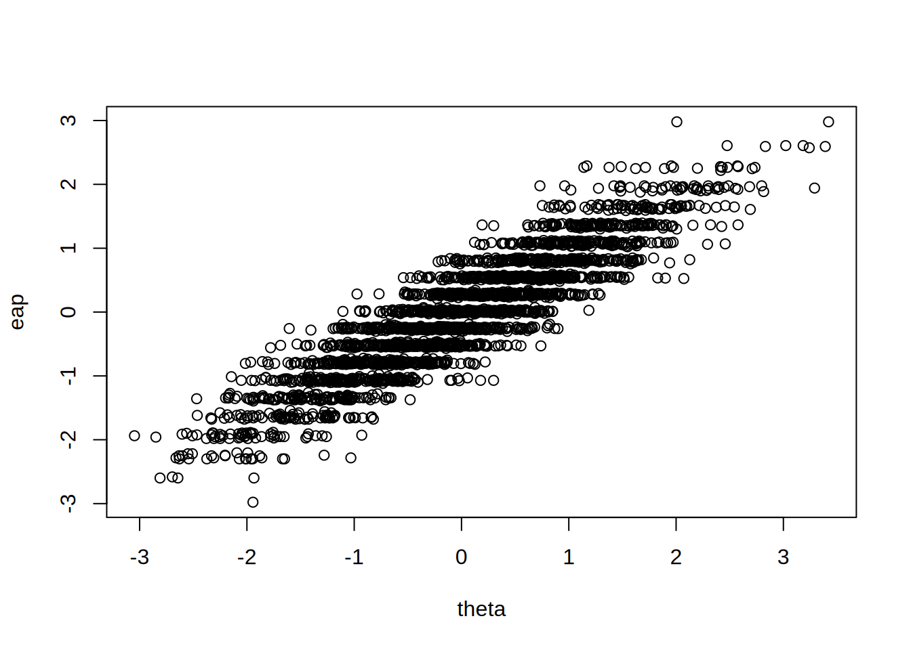

set.seed(123)
# サンプルサイズと項目数の設定
size <- 3000 # サンプルサイズ（受検者数）
item_n <- 20 # 項目数（テストの問題数）
# 項目パラメータの設定
b_para <- seq(-3, 3, length.out = item_n) # 項目困難度
a_para <- rep(0.9, item_n) # 項目識別力
# 受検者の能力値を正規分布から生成
theta <- rnorm(size, 0, 1)
# 2PLモデルに基づく応答データの生成
resp <- mirt::simdata(
a = a_para * 1.7, # alphaの設定
d = b_para * -1.7 * a_para, # dの設定
Theta = theta, # 能力値
itemtype = "2PL" # モデルタイプ
)mirtの使い方
mirt: Multidimensional Item Resonse Theory は， 多次元項目反応理論を行うパッケージです。 2PLや3PLといった基本的な項目反応理論はもちろん， 多次元モデルやダミーデータの生成も可能です。
ダミーデータの生成
mirtの2PLは，下記の式で表現されます。
\[P(\theta|\alpha, d)=\frac{1}{1+exp(-(\alpha \theta + d))}\]
通常のIRTの場合，\(exp()\)の中は，定数\(D(=1.7)\)，識別力\(a\)，困難度\(b\)を用いて， \(-Da(\theta - b)\)となります。 これは，\(-(Da\theta + (-Dab))\)なので，\(\alpha = Da\), \(d = -Dab\)です。 mirtを使う場合はこのパラメータに合わせるために， \(\alpha\)は識別力\(a\)を\(D\)倍， \(d\)は困難度を\(-Da\)倍した値を設定します1。
たとえば，mirtによるダミーデータの生成は次のようになります。
mirtによる2PL
# 2PLモデルの推定
# verbose = FALSEで出力を抑制
mod <- mirt::mirt(resp, 1, verbose = FALSE)推定されたパラメータの確認は，coef関数で行います。 引数IRTparsをTRUEにすると， \(P(\theta|\alpha, d)=\frac{1}{1+exp(-Da(\theta - b))}\) の形の\(a\)と\(b\)が出力されます。 ただし\(D=1\)で計算されているので， \(D=1.7\)の識別力パラメータを得るには1.7で割る必要があります2。
mirt_coef <- mirt::coef(mod, simplify = TRUE, IRTpars = TRUE)$items
# 識別力
mirt_coef[, 1] / 1.7 Item_1 Item_2 Item_3 Item_4 Item_5 Item_6 Item_7 Item_8
0.8123192 0.7283712 0.9356659 0.8520897 0.9719813 0.8754340 0.8750573 0.9194588
Item_9 Item_10 Item_11 Item_12 Item_13 Item_14 Item_15 Item_16
0.9260979 0.9569549 0.9270091 0.9020534 0.8729786 0.8898285 0.9008022 0.8583342
Item_17 Item_18 Item_19 Item_20
0.9790873 0.7899365 0.8532047 0.8196916 # 困難度
mirt_coef[, 2] Item_1 Item_2 Item_3 Item_4 Item_5 Item_6 Item_7
-3.2595804 -3.1617878 -2.3007031 -2.1579826 -1.6195342 -1.4520217 -1.1529965
Item_8 Item_9 Item_10 Item_11 Item_12 Item_13 Item_14
-0.7334979 -0.4408787 -0.1208248 0.1853241 0.4649292 0.8460458 1.1019233
Item_15 Item_16 Item_17 Item_18 Item_19 Item_20
1.3796818 1.8240241 1.9511269 2.5456941 2.9361969 3.1044306 受検者の能力推定
mirtでは，fscores関数で受検者の能力推定ができます。 デフォルトではEAPが出力されますが， 引数（method）を変更することで， MLE，WLE，MAPなども出力できます。
eap <- mirt::fscores(mod, verbose = FALSE)
## 計算に時間がかかるので省略
# mle <- mirt::fscores(mod, method = "ML")
# wle <- mirt::fscores(mod, method = "WLE")
# map <- mirt::fscores(mod, method = "MAP")thetaとeapの関連をplot関数で表示してみます。
plot(theta, eap)